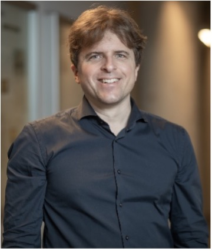
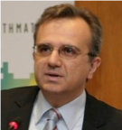
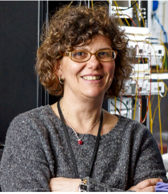
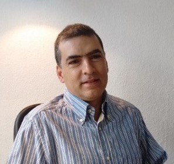

Communication networks are a critical infrastructure of our digital society, and data traffic is currently growing explosively, especially to, from, and inside datacenters. However, today's manual and error-prone approach to manage and operate communication networks stands in stark contrast to the increasingly stringent dependability and performance requirements. In this talk, I will present the vision of more automated and "self-driving" communication networks. We will learn about the enabling technologies for such networks as well as first solutions presented in the literature. To make things more concrete, I will give two examples of this vision: First, I will discuss the design of networks which automatically verify, repair and "synthesize" themselves, to ensure policy compliance at any time. Second, I will show how emerging optical communication technologies enable self-adjusting networks which optimize themselves towards the workload they currently serve, in a demand-aware manner, and which can hence significantly improve network throughput. We will conclude by discussing open challenges and avenues for future research.
 Stefan Schmid is a Professor at the Technical University of Berlin, Germany. MSc and PhD at ETH Zurich, Postdoc at TU Munich and University of Paderborn, Senior Research Scientist at T-Labs in Berlin, Associate Professor at Aalborg University, Denmark, and Full Professor at the University of Vienna, Austria. Stefan Schmid received the IEEE Communications Society ITC Early Career Award 2016 and an ERC Consolidator Grant 2019. For more information on his work, see https://schmiste.github.io/.
Wireless is an essential component for transforming diverse verticals, enterprise and consumer applications. This a trend that was set at the center of attention in 5G. Similar approaches will be intensified in 6G. Advanced 6G powered applications and features will be enabled, such as massive twinning, cooperative robots, XR, and all other technologies necessary for progressing to the tight coupling of the physical, biological and digital worlds. These aspects call for advances in the management of the infrastructures. Known and novel functionalities will be needed in the management of spectrum / communication resources, the cloud continuum, storage aspects. More stringent non-functional requirements will need to eb achieved in the management, in terms of decision making delay, robustness, security and compliance with legal / ethical frameworks. The talk will revisit all these aspects: vertical needs, management challenges, novel functional and non-functional requirements for the management.
 Panagiotis Demestichas is a Professor at the University of Piraeus, School of ICT, Department of Digital Systems, Greece. Currently, he focuses on the development of systems for WINGS ICT Solutions (www.wings-ict-solutions.eu), its spin-outs Incelligent (www.incelligent.net), and the joint venture diTTo (https://ditto-engineering.com/). WINGS focuses on advanced solutions, leveraging on IoT / 5G / AI / AR, for the environment (air quality), utilities and infrastructures (water, energy, gas, transportation, construction), production and manufacturing (aquaculture, agriculture and food safety, logistics and industry 4.0), service sectors (health, security). Incelligent focuses on products for banking, the public sector and for telecommunication infrastructures. Panagiotis conducts research on 6G, cloud and IoT, big data and artificial intelligence, orchestration / diagnostics and intent-oriented mechanisms. He holds a Diploma and a Ph.D. degree on Electrical Engineering from the National Technical University of Athens (NTUA). He holds patents, has published numerous articles and research papers, and is a member of the Association for Computing Machinery (ACM) and a Senior Member of IEEE.
5G was primarily developed with a focus on industry, addressing the importance of advanced connectivity and IoT to drive digital transformation in vertical sectors. 6G needs to take a more holistic approach towards people and economy, focusing on global societal challenges such as climate change, inclusion, poverty, skills, the future of work and civic renewal. This talk will introduce the notion of adopting Cyber-Physical-Social System (CPSS) approaches to the design of the next generation mobile networks. This is an emerging concept addressing the need to understand the impact of Cyber-Physical Systems (CPS) on society and vice versa, and design digital infrastructures accordingly. It reflects on projected trends of 6G, its users and their environment. The talk will further explain the rational for human-centric service models and will justify the need to leverage on human intelligence and co-creational methodologies in the design and delivery of future mobile networks.
 Dimitra Simeonidou is a Full Professor at the University of Bristol, the Co-Director of the Bristol Digital Futures Institute and the Director of Smart Internet Lab. Her research is focusing on the fields of high-performance networks, programmable networks, wireless-optical convergence, 5G/6G and smart city infrastructures. She is increasingly working with Social Sciences on topics of digital transformation for society and businesses. Dimitra has been the Technical Architect and the CTO of the smart city project Bristol Is Open. She is currently leading the Bristol City/Region 5G and Open RAN pilots. She is the author and co-author of over 600 publications, numerous patents and several major contributions to standards. She has been co-founder of two spin-out companies, the latest being the University of Bristol VC funded spin-out Zeetta Networks, http://www.zeetta.com, delivering SDN solutions for enterprise and emergency networks. Dimitra is a Fellow of the Royal Academy of Engineering (FREng), a Fellow of the IEEE (FIEEE), Fellow of WWRF and a Royal Society Wolfson Scholar.
The recent and well-known attacks and vulnerabilities that IoT have been suffering, underline the need for automated approaches to the deployment of IoT devices in order to design a framework for the detection, analysis, and mitigation of cybersecurity attacks in IoT deployment. Indeed, the scale and heterogeneity of IoT devices require self-configuration mechanisms without human interaction to reduce the attack surface. Due to the huge interconnectivity of such scenarios, a vulnerability in a single device could have catastrophic consequences in the whole network. This is further accentuated by the deployment of technologies such as 5G, where the large number of relationships and interdependencies between the components of the architecture harden security management. The next generation of IoT devices should be able to self-manage their own security, being able to adapt to environmental conditions and to react to possible attacks. In order to set the basis for this evolution, we propose a cyclical methodology integrating and instantiating the different processes necessary to achieve the self-management of the device within their lifecycle management.
 Antonio Skarmeta received the M.S. degree in Computer Science from the University of Granada and B.S. (Hons.) and the Ph.D. degrees in Computer Science from the University of Murcia Spain. Since 2009 he is Full Professor at the same department and University. Antonio F. Skarmeta has worked on different research projects in the national and international area in the networking, security and IoT and 5G area, and now is involved in 5GInspireplus, 5GMobix, GN4+, CyberSec4Europe and BIECO. He coordinated the H2020 project IoTCrawler focusing on IoT advanced discovery on IPv6 networks and OLYMPUS on privacy preserving IdM and now the 6G project CERBERUS on Secueity on Beyond 5G. He has been chair of several conference and workshop, with special attention to IEEE 5GWF and now the IEEE Future Networks World Forum. His main interested is in the integration of 5G, security services, identity, IoT and Smart Cities, being scientific manager of the Smart City project of Murcia City Hall (MiMurcia). He has been the head of the research group ANTS since its creation on 1995. Actually, he is also advisor to the vice-rector of Research of the University of Murcia for International projects and head of the International Research Project Office. Since 2014 until 2010 he has been Spanish National Representative for the MSCA within H2020. He has published over 200 international papers and being member of several program committees.